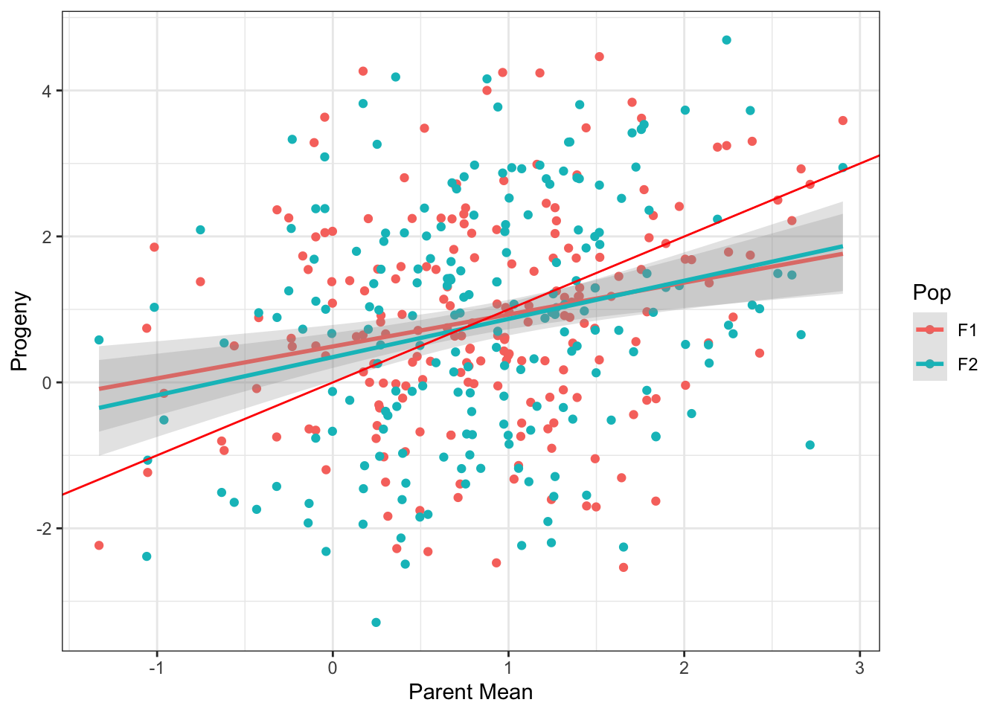

Last updated: 2022-02-01
Checks: 7 0
Knit directory: QuantitativeGen/
This reproducible R Markdown analysis was created with workflowr (version 1.7.0). The Checks tab describes the reproducibility checks that were applied when the results were created. The Past versions tab lists the development history.
Great! Since the R Markdown file has been committed to the Git repository, you know the exact version of the code that produced these results.
Great job! The global environment was empty. Objects defined in the global environment can affect the analysis in your R Markdown file in unknown ways. For reproduciblity it’s best to always run the code in an empty environment.
The command set.seed(20220124) was run prior to running the code in the R Markdown file. Setting a seed ensures that any results that rely on randomness, e.g. subsampling or permutations, are reproducible.
Great job! Recording the operating system, R version, and package versions is critical for reproducibility.
Nice! There were no cached chunks for this analysis, so you can be confident that you successfully produced the results during this run.
Great job! Using relative paths to the files within your workflowr project makes it easier to run your code on other machines.
Great! You are using Git for version control. Tracking code development and connecting the code version to the results is critical for reproducibility.
The results in this page were generated with repository version 79038f7. See the Past versions tab to see a history of the changes made to the R Markdown and HTML files.
Note that you need to be careful to ensure that all relevant files for the analysis have been committed to Git prior to generating the results (you can use wflow_publish or wflow_git_commit). workflowr only checks the R Markdown file, but you know if there are other scripts or data files that it depends on. Below is the status of the Git repository when the results were generated:
Ignored files:
Ignored: .Rhistory
Ignored: .Rproj.user/
Untracked files:
Untracked: output/QTLgenotypes.csv
Note that any generated files, e.g. HTML, png, CSS, etc., are not included in this status report because it is ok for generated content to have uncommitted changes.
These are the previous versions of the repository in which changes were made to the R Markdown (analysis/Lab2.Rmd) and HTML (docs/Lab2.html) files. If you’ve configured a remote Git repository (see ?wflow_git_remote), click on the hyperlinks in the table below to view the files as they were in that past version.
| File | Version | Author | Date | Message |
|---|---|---|---|---|
| Rmd | 79038f7 | LucianoRogerio | 2022-02-01 | Homework 2 |
| html | 79038f7 | LucianoRogerio | 2022-02-01 | Homework 2 |
Illustrate regression to the mean between parents and offspring using AlphaSimR
1. You know how to create a population – create a population of parents. Answer
2. You know how to get phenotypes from that population. Answer
3. You want to randomly mate that population to get progeny that will be regressed to the mean. Create a crossPlan matrix like I did to generate the F1s, except that each row should have randomly-picked parents, rather than 1 and 2 like for the F1s. There is also a command AlphaSimR::randCross. Check out its documentation. If you use that command, you will have to find the pedigree of the progeny using the @mother and @father ids of the progeny population and match those up to the parent population. If you make the crossPlan, then it gives you the seed and pollen parent ids. Answer
4. Having made the progeny population, phenotype it also. Answer
5. Use each row of the crossPlan to find the two parents and calculate their phenotypic mean. Answer
6. Make a scatterplot of the progeny phenotypes against the parent mean phenotypes. Answer
What is the regression coefficient?
How much closer to the mean are offspring, on average, compared to their parents?
packages_used <- c("AlphaSimR", "tidyverse", "workflowr", "here")
ip <- installed.packages()
all_packages_installed <- TRUE
for (package in packages_used){
if (!(package %in% ip[, "Package"])){
print(paste("Please install package", package, sep = " "))
all_packages_installed <- FALSE
}
}#END packages_used
if (!all_packages_installed) stop("Need to install packages")
library(tidyverse); library(here)── Attaching packages ─────────────────────────────────────── tidyverse 1.3.1 ──✓ ggplot2 3.3.5 ✓ purrr 0.3.4
✓ tibble 3.1.6 ✓ dplyr 1.0.7
✓ tidyr 1.1.4 ✓ stringr 1.4.0
✓ readr 2.1.1 ✓ forcats 0.5.1── Conflicts ────────────────────────────────────────── tidyverse_conflicts() ──
x dplyr::filter() masks stats::filter()
x dplyr::lag() masks stats::lag()here() starts at /Users/lbd54/Documents/GitHub/QuantitativeGenloading the here package it already fix the Project directory as the working directory.
source(here::here("code/addToREADME.R"))
addToREADME(paste0("## ", rmarkdown::metadata$title), append = F)
addToREADME(c(date(), ""))
packages_info <- ip[packages_used, c("Package", "Version", "Built")]
addToREADME(c("The packages used in this script are:", "Package, Version, Built"))
apply(packages_info, 1, function(vec) addToREADME(paste(vec, collapse = " "))) AlphaSimR tidyverse workflowr
"AlphaSimR 1.0.4 4.1.1" "tidyverse 1.3.1 4.1.0" "workflowr 1.7.0 4.1.1"
here
"here 1.0.1 4.1.0" set.seed(1312022)
addToREADME("")
addToREADME(paste("set.seed =", "1312022", sep = " "))
addToREADME("")
# Simulations parameters for the population
nFounders <- 100
inbred <- FALSE
ploidy <- 2L
nChr <- 18
effPopSize <- 200
segSites <- 1650
nQTL <- 1000
nSNP <- 500
nCores <- 4
addToREADME(c(paste("Number of Founders -->", nFounders, sep = " "),
paste("Is the founders inbred?", inbred, sep = " "),
paste("Which is the ploidy?", ploidy, sep = " "),
paste("Number of Chromosomes -->", nChr, sep = " "),
paste("Size of the effective population -->", effPopSize, sep = " "),
paste("Number of quatitative loci traits per chromosome expected affecting the trait -->", nQTL, sep = " "),
paste("Number of SNP markers per chromosome -->", nSNP, sep = " "),
paste("Number of cores to apply parallel to the simulations of the chromosomes -->", nCores, sep = " ")))
addToREADME(" ")founderPop <- AlphaSimR::runMacs(nInd = nFounders,
inbred = inbred,
ploidy = ploidy,
nChr = nChr,
segSites = segSites,
nThreads = nCores)
addToREADME("Founder Pop Info")
addToREADME("----------------")
capture.output(founderPop, file = here::here("docs/README.md"), type = "output", append = TRUE)
addToREADME(" ")
SP <- AlphaSimR::SimParam$new(founderPop = founderPop)$addTraitA(nQtlPerChr = nQTL)$setVarE(H2 = 0.5)
# Simulating the Founder Pop with phenotype
foundersID <- AlphaSimR::newPop(rawPop = founderPop,
simParam = SP)
addToREADME("Founders Ids Info")
addToREADME("----------------")
capture.output(foundersID, file = here::here("docs/README.md"), type = "output", append = TRUE)
addToREADME(" ")F1 <- AlphaSimR::selectCross(pop = foundersID,
nInd = 35,
nCrosses = 200,
use = "pheno")
F1 <- AlphaSimR::setPheno(F1)
ParentsF1ID <- c(F1@mother,F1@father) %>% unique %>% .[order(as.numeric(.))]
ParentsF1 <- AlphaSimR::selectInd(foundersID, nInd = 35, candidates = ParentsF1ID)
ParentsF1 <- AlphaSimR::setPheno(ParentsF1)
F2 <- AlphaSimR::self(F1)
F2 <- AlphaSimR::setPheno(F2)
addToREADME("Populations Sim")
addToREADME("---------------")
addToREADME("Parents F1 Selected")
addToREADME("-------------------")
capture.output(ParentsF1, file = here::here("docs/README.md"), type = "output", append = TRUE)
addToREADME(" ")
addToREADME("F1 Simulated")
addToREADME("------------")
capture.output(F1, file = here::here("docs/README.md"), type = "output", append = TRUE)
addToREADME(" ")
addToREADME("F2 Simulated")
addToREADME("------------")
capture.output(F2, file = here::here("docs/README.md"), type = "output", append = TRUE)
addToREADME(" ")ParentsF1Dt <- data.frame(ID = ParentsF1@id,
pheno = ParentsF1@pheno)
F1Dt <- data.frame(ID = F1@id,
mother = F1@mother,
father = F1@father,
pheno = F1@pheno)
F2Dt <- data.frame(ID = F2@id,
mother = F2@mother,
father = F2@father,
pheno = F2@pheno)F1Dt2 <- left_join(F1Dt, ParentsF1Dt, by = c("mother" = "ID"), suffix = c("", ".mother")) %>%
left_join(., ParentsF1Dt, by = c("father" = "ID"), suffix = c("", ".father")) %>%
dplyr::mutate(pheno.ParMean = (pheno.mother + pheno.father)/2,
Pop = "F1")
F2Dt2 <- left_join(F2Dt, ParentsF1Dt, by = c("mother" = "ID"), suffix = c("", ".mother")) %>%
left_join(., ParentsF1Dt, by = c("father" = "ID"), suffix = c("", ".father")) %>%
dplyr::mutate(pheno.ParMean = (pheno.mother + pheno.father)/2,
Pop = "F2")
Data <- rbind(F1Dt2, F2Dt2)Data %>%
ggplot(aes(x = pheno.ParMean, y = pheno, color = Pop)) +
geom_point() +
geom_smooth(method = "lm", alpha = 0.25) +
geom_abline(intercept = 0, slope = 1, color = "red") +
theme_bw() + xlab("Parent Mean") + ylab("Progeny")`geom_smooth()` using formula 'y ~ x'
| Version | Author | Date |
|---|---|---|
| 79038f7 | LucianoRogerio | 2022-02-01 |
Data %>% filter(Pop == "F1") %>%
lm(formula = .$pheno ~ .$'pheno.ParMean') %>%
coefficients %>% .[1] %>% round(., digits = 2) %>%
paste("The observed broad sense heritability is", .,
"while the expected was", SP$varG/(SP$varG + SP$varE), sep = " ")[1] "The observed broad sense heritability is 0.49 while the expected was 0.5"
sessionInfo()R version 4.1.1 (2021-08-10)
Platform: aarch64-apple-darwin20 (64-bit)
Running under: macOS Big Sur 11.6.1
Matrix products: default
LAPACK: /Library/Frameworks/R.framework/Versions/4.1-arm64/Resources/lib/libRlapack.dylib
locale:
[1] en_US.UTF-8/en_US.UTF-8/en_US.UTF-8/C/en_US.UTF-8/en_US.UTF-8
attached base packages:
[1] stats graphics grDevices utils datasets methods base
other attached packages:
[1] here_1.0.1 forcats_0.5.1 stringr_1.4.0 dplyr_1.0.7
[5] purrr_0.3.4 readr_2.1.1 tidyr_1.1.4 tibble_3.1.6
[9] ggplot2_3.3.5 tidyverse_1.3.1
loaded via a namespace (and not attached):
[1] httr_1.4.2 sass_0.4.0 bit64_4.0.5 vroom_1.5.7
[5] jsonlite_1.7.3 splines_4.1.1 modelr_0.1.8 bslib_0.3.1
[9] assertthat_0.2.1 highr_0.9 cellranger_1.1.0 yaml_2.2.1
[13] pillar_1.6.4 backports_1.4.1 lattice_0.20-45 glue_1.6.0
[17] digest_0.6.29 promises_1.2.0.1 rvest_1.0.2 colorspace_2.0-2
[21] htmltools_0.5.2 httpuv_1.6.5 Matrix_1.4-0 pkgconfig_2.0.3
[25] broom_0.7.11 haven_2.4.3 scales_1.1.1 whisker_0.4
[29] later_1.3.0 tzdb_0.2.0 git2r_0.29.0 mgcv_1.8-38
[33] farver_2.1.0 generics_0.1.1 ellipsis_0.3.2 withr_2.4.3
[37] AlphaSimR_1.0.4 cli_3.1.0 magrittr_2.0.1 crayon_1.4.2
[41] readxl_1.3.1 evaluate_0.14 fs_1.5.2 fansi_1.0.2
[45] nlme_3.1-153 xml2_1.3.3 tools_4.1.1 hms_1.1.1
[49] lifecycle_1.0.1 munsell_0.5.0 reprex_2.0.1 compiler_4.1.1
[53] jquerylib_0.1.4 rlang_0.4.12 grid_4.1.1 rstudioapi_0.13
[57] labeling_0.4.2 rmarkdown_2.11 gtable_0.3.0 DBI_1.1.2
[61] R6_2.5.1 lubridate_1.8.0 knitr_1.37 fastmap_1.1.0
[65] bit_4.0.4 utf8_1.2.2 workflowr_1.7.0 rprojroot_2.0.2
[69] stringi_1.7.6 parallel_4.1.1 Rcpp_1.0.8 vctrs_0.3.8
[73] dbplyr_2.1.1 tidyselect_1.1.1 xfun_0.29